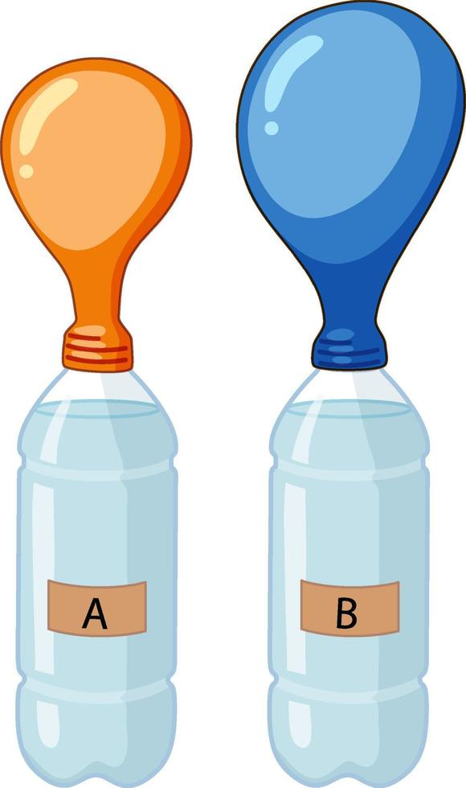
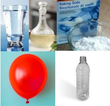
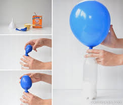
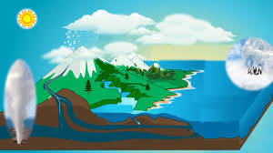

Bienvenido a mi página web
Tema: EL CAMBIO DE LA MATERIA
El tema del cambio de la materia hace referencia a las transformaciones que sufren los materiales o sustancias cuando pasan de un estado a otro o cuando se modifican sus propiedades. Estos cambios pueden ser físicos o químicos:
1. Cambio físico: No cambia la composición química de la materia, solo se alteran sus características físicas, como el estado (sólido, líquido, gas), la forma, el volumen, etc. Ejemplos incluyen el derretimiento de un hielo o la evaporación del agua.
2. Cambio químico: En este tipo de cambio, la composición de la materia se ve modificada, ya que se forman nuevas sustancias. Ejemplos de cambios químicos son la combustión, la oxidación de un metal o la digestión de los alimentos.

En este experimento se hará que un globo sea inflado por medio de una reacción química, usando varias cosas para producir el aire necesario para poder cumplir este objetivo.
Para poder recrear este experimento debemos de tener:
Globo
Agua
Vinagre
Bicarbonato de sodio
Botella plástica
Se debe que al juntar los elementos dichos antes, existe una reacción química, entre el bicarbonato de sodio y el vinagre, el agua ayuda a que esto se junte de una forma líquida más segura, al recrearse la reacción, expulsa un gas, o un estado gaseoso, el cual logra inflar el globo por este tipo de sustancias y reacción química
Las reacciones químicas y el cambio de materias son algo que al juntarse logren algo muy impresionante, ya sea usandolo en experimentos o simplemente observando el mundo, que es la forma más natural de observar estos cambios.
Inserta un video de ejemplo.